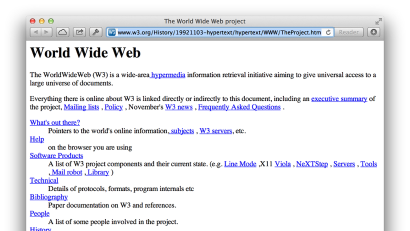
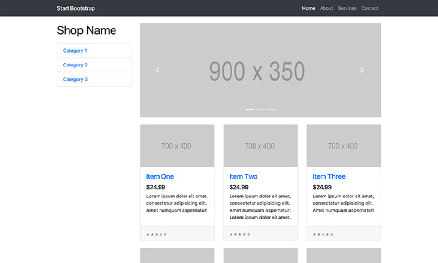
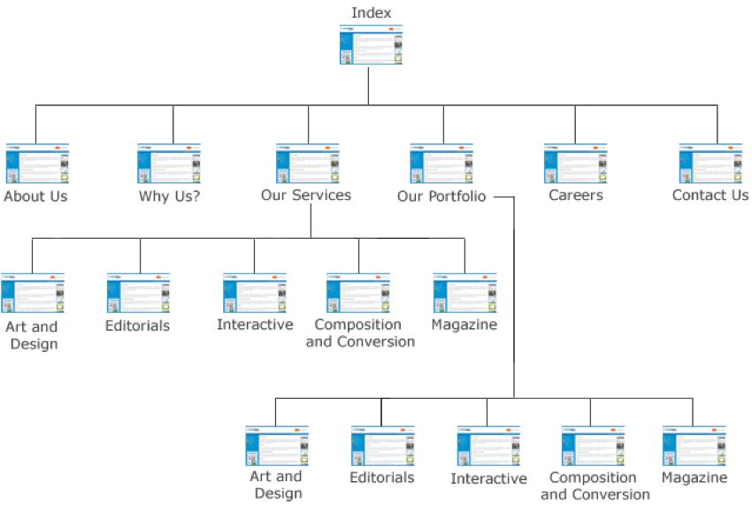
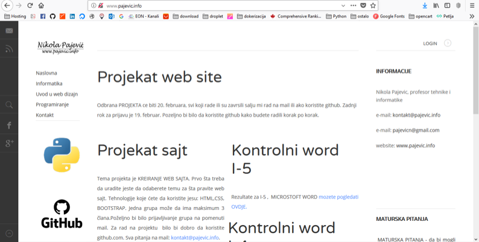

Uvod u web dizajn
Osnove web dizajna
Nikola Pajevic
www.pajevic.info
Sadržaj
- Web dizajn
- Web hosting i domen
- Vrste web sajtova
- Alati za izradu
- Tehnologije
- Postupak kreiranja
- Planiranje web sajta
- Struktura i organizacija
- Mapa
- Početna strana
- Navigacija
- Fontovi
- Slike
Web dizajn
- Web dizajn je planiranje, kreiranja izgleda i strukture, izbor sadržaja i izrada Web stranice.
- Oblasti Web dizajna obuhvataju: Web i grafički dizajn, dizajn interfejsa i optimizaciju za Web pretraživače.
- Prvi Web dizajner bio je Tim Berners-Lee, koji je 1990/91. godine kreirao prvi Web sajt na Internetu (info.cern.ch)

Web hosting i domen
- Web hosting predstavlja prostor na hard disku servera koji je namjenski podešen da prikazuje različite Internet sadržaje, a koji vam obezbjeđuje hosting provajder.
- Domen (eng: Domain) je zapravo ime ili adresa web sajta. Kao što imate adresu stanovanja, tako vam je potrebna i adresa koju želite za sopstveni web sajt.
Vrste web sajtova
- Podjela prema vrsti je na statičke i dinamičke web sajtove.
- Statički sajtovi su oni koji samo prikazuju neke informacije, koje se čitaju iz samog koda i ne mijenjaju se.
- Dinamički čitaju podatke iz baze i imaju mogućnost mijenjanja i upravljanja tim podacima. Primjer dinamičkog web sajta je Facebook – popularna društvena mreža, kao i svi web šopovi.
- Svaki dinamički web sajt prilikom izrade se sastoji iz dva dijela: front-end,back-end
Alati za izradu
Microsoft
- Notepad
- Espression Web
- Front Page
Adobe
Ostali
- Notepad ++
- Sublime
- Aptana Studio 3
- Arachnophilia
- Bluefish
- CoffeeCup
Tehnologije
- HTML
- CSS
- BOOTSTRAP
- JAVASCRIPT
- PHP
- ANGULAR
- Play Framework
- MySQL
- Django Framework
- PostgreSQL
Postupak kreiranja sajta
- Analiza i definisanje ciljeva.
- Planiranje.
- Prikupljanje materijala.
- Proces izrade sajta.
- Testiranje.
- Kreiranje dokumentacije.
- Održavanje.
Planiranje web sajta
- Planiranje web sajta je najvažniji dio u procesu.
- Treba da znate šta tačno želite da prikažete vašim sajtom.
- Svaki dio sajta treba da bude razradjen i jasan.
- Definisati tačno kome je sajt namijenjen.
- Osmisliti dizajn.
- Odlučiti da li će biti statički ili dinamički.
Struktura i organizacija
- Prilikom kreiranja web stranice neophodno je napraviti određene logičke cjeline.
- Napraviti ogranizaciju elementa na sajtu. Odrediti gdje će da stoji glavni meni, baneri, slideshow, prostor za prikazivanje vijesti i slično.
- Za lakše rasporedjivanje elemnata na sajtu možete koristiti bootstrap.
- Prilikom kreiranja sajta svi elementi sajta moraju da budu u jednom paketu/folderu. Unutar njega obavezno stoje folderi: images,css,scripts
Struktura i organizacija
- Bootstrap je open-source JavaScript framework, odnosno kombinacija HTML-a, CSS-a i JavaScript-a, razvijen sa ciljem da omogući i olakša razvoj web formi (interface-a, tj. layout-a) kao i razvoj naprednih web komponenti. Zato ga sa te strane možemo zvati Front-End-Framework.

Mapa
- Site map (mapa sajta) služi (sa SEO aspekta) da pretraživači vide spisak svih vaših stranica. To je korisno u onim slučajevima kad na primjer internet pretraživači ne mogu normalnim putem da prate vaše linkove. U zavisnosti od sajta imamo: linearni, mješoviti, hijerarihski tip.

Početna strana
- Svaka početna strana se zove INDEX strana. Ona se uvijek snima pod tim imenom index.html .
- Na početnoj strani se nalaze sve osnovne informacije.
- Navigacija ka svim ostalim stranama na sajtu se uvijek nalazi na index strani.
- U glavnom meniju uvijek prva stavka je povezana sa prvom stranom. Na primjer POČETNA, ona je linkovana na index.html.

Navigacija
- Navigacija na Web sajtu mora biti pregledna, laka za korišćenje i da omogućava korisniku da sa što manje klikova dođe do željene stranice.
- Navigacija se uglavnom postavlja u gornju stranu sajta.
- Na svakoj stranici sajta neophodno je da se nalazi navigacija tako da korisnik sa bilo koje strane može da pristupi svakom dijelu sajta.
Fontovi
- Prilikom kreiranja sajta voditi računa da koristite neke Google fontove, zato što se učitavaju sa svakom računaru i uređaju.
- Zahvaljujući prvenstveno Google Fonts servisu,danas se tu nalazi preko 700 različitih porodica fontova gdje ćete gotovo sigurno pronaći font koji vam odgovara.
- Postoje dvije vrste fontova: serifni i neserifni.
- Serifni fontovi koji se koriste za tektstove gdje postoji mogućnost štampanja.
- Neserifni fontovi koriste za naslove koji imaju za cilj da ostave utisak.
Slike-fotografije
- Prilikom odabira slika-fotografija, morati biti veoma oprezni. Što je slika-fotografija veća to se sajt sporije otvara.
- Neka preporučena rezolucija koja se koristi za slike-fotografije je 72 dpi.
- Neki formati slika koji se koriste za web: jpg,png, gif...